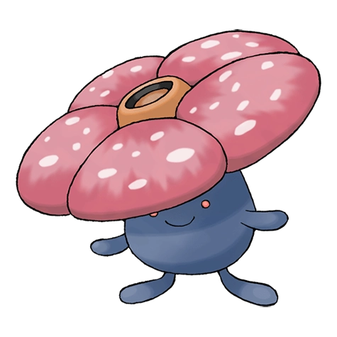
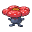

Вайлплюм

Вайлплюм — Покемон 1 поколения под номером 45 в Pokedex. Обитает он в регионе Канто и относится к Травяному и Ядовитому типу. Это одна с финальных стадий эволюции Покемона Оддиша. Токсичная пыльца Вайлплюма вызывает приступы ужасной аллергии. Вот почему желательно никогда не приближаться к красивым цветам в джунглях, какими бы роскошными они ни были.
Тип и слабости:
Травяной
Ядовитый
Эволюция

# 045 Вайлплюм
Финальная стадия